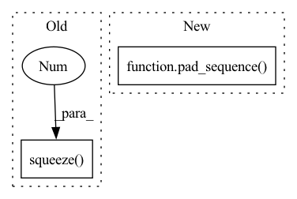

Pattern ID :19349

Before Change
elif self.mode == 2:
feats = []
for wav in wavs:
feat = self.extractor.extract_features(wav.unsqueeze(0), None)[
0
].squeeze(0)
feats.append(feat)
elif self.mode == 3:
wavs = [wav.cpu().numpy() for wav in wavs]
feats = [self.extractor(wav) for wav in wavs]
After Change
elif self.mode == 2:
wav_lens = [len(wav) for wav in wavs]
wavs = pad_sequence(wavs, batch_first=True)
padding_mask = [
torch.arange(wavs.size(1)) >= wav_len for wav_len in wav_lens
]
padding_mask = torch.stack(padding_mask).to(self.device)
In pattern: SUPERPATTERN
Frequency: 3
Non-data size: 2
Instances
Fragment ID: 63113991
Project Name: ga642381/robust-vc
Commit Name: 26399d6990737b2aa2afb010573a5e04d0804bb0
Time: 2021-10-12
Author: ga642381@gmail.com
File Name: S2VC/S2VC-robust/data/feature_extract.py
M Class Name: FeatureExtractor
N Class Name: FeatureExtractor
M Method Name: get_feature(2)
N Method Name: get_feature(2)
M Parent Class:
N Parent Class:
M File Name: S2VC/S2VC-robust/data/feature_extract.py
N File Name: S2VC/S2VC-robust/data/feature_extract.py
M Start Line: 76
M End Line: 86
N Start Line: 76
N End Line: 92
'>
Before Change
for mel in mels:
mel = mel.unsqueeze(0)
mel_emb, _ = self.mel_rnn(mel)
mel_emb = mel_emb.squeeze(0)
mel_embs.append(mel_emb)
mel_embs = pad_sequence(
mel_embs, batch_first=True, padding_value=float(self.quant_dim // 2)
After Change
max_mel_len = max(mel_lens)
max_wav_len = max_mel_len * self.hop_len
pad_mels = pad_sequence(mels, batch_first=True)
pack_mels = pack_padded_sequence(
pad_mels, torch.tensor(mel_lens), batch_first=True, enforce_sorted=False
)
pack_mel_embs, _ = self.mel_rnn(pack_mels)
'>
Fragment ID: 63113990
Project Name: yistlin/universal-vocoder
Commit Name: decd133f652564aab54717a4e8df0316421e35c0
Time: 2020-10-07
Author: yishen992@gmail.com
File Name: models/universal_vocoder.py
M Class Name: UniversalVocoder
N Class Name: UniversalVocoder
M Method Name: generate(2)
N Method Name: generate(2)
M Parent Class: nn.Module
N Parent Class: nn.Module
M File Name: models/universal_vocoder.py
N File Name: models/universal_vocoder.py
M Start Line: 78
M End Line: 108
N Start Line: 77
N End Line: 106
'>
Before Change
speechs = list()
speech_lens = list()
for datapoint in batch:
texts.append(torch.LongTensor(datapoint[0]).squeeze(0))
text_lens.append(torch.LongTensor([datapoint[1]]))
speechs.append(torch.Tensor(datapoint[2]))
speech_lens.append(torch.LongTensor([datapoint[3]]))
After Change
text_lens.append(torch.LongTensor([datapoint[1]]))
speechs.append(torch.Tensor(datapoint[2]))
speech_lens.append(torch.LongTensor([datapoint[3]]))
print(pad_sequence(texts, batch_first=True).shape)
return (pad_sequence(texts, batch_first=True),
torch.stack(text_lens).squeeze(1),
pad_sequence(speechs, batch_first=True),
'>
Fragment ID: 63113989
Project Name: digitalphonetics/ims-toucan
Commit Name: 24ca2ac33029f434e47969661b0a878773639ab8
Time: 2021-08-12
Author: florian.lux@ims.uni-stuttgart.de
File Name: TrainingInterfaces/Text_to_Spectrogram/Tacotron2/tacotron2_train_loop.py
M Class Name: AnonimousClass
N Class Name: AnonimousClass
M Method Name: collate_and_pad(1)
N Method Name: collate_and_pad(1)
M Parent Class:
N Parent Class:
M File Name: TrainingInterfaces/Text_to_Spectrogram/Tacotron2/tacotron2_train_loop.py
N File Name: TrainingInterfaces/Text_to_Spectrogram/Tacotron2/tacotron2_train_loop.py
M Start Line: 52
M End Line: 68
N Start Line: 47
N End Line: 69